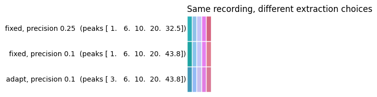
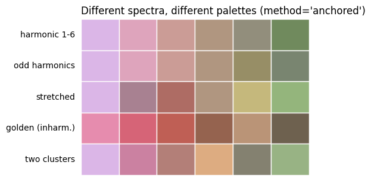
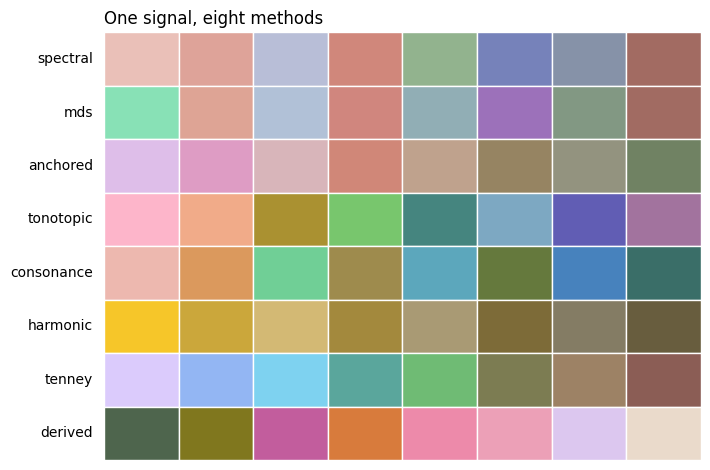
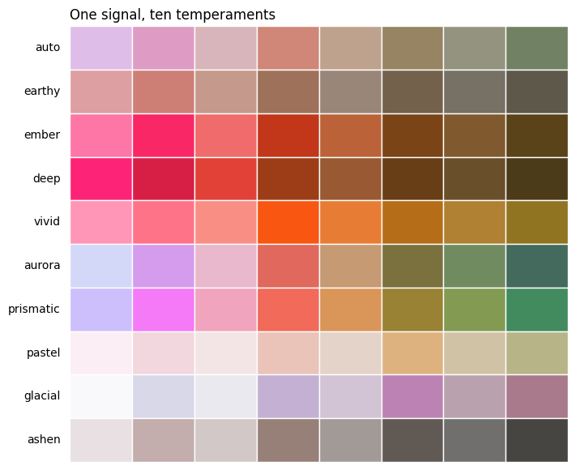
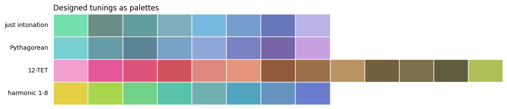
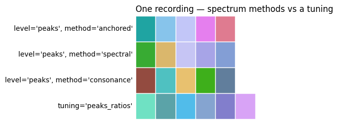
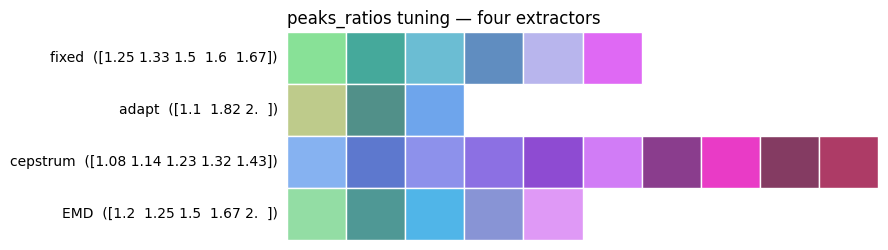
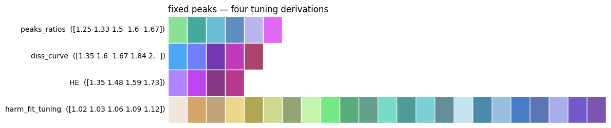
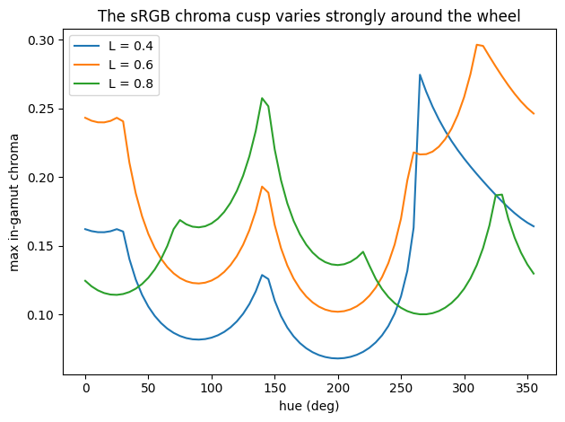
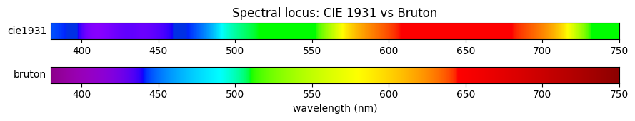

biocolors — deriving colour from a biosignal#
biotuner.biocolors turns a signal’s spectral peaks — or a tuning’s ratios —
into perceptually principled colour palettes. Every colour axis is driven by a
swappable harmonic metric, the working space is perceptually uniform (OKLCh),
and every palette is guaranteed inside the sRGB gamut.
This notebook is a tour of the module on synthetic signals, so it runs
anywhere. For the conceptual background and the measured results on real sleep
EEG, see the companion method paper (docs/biocolors_methods.md).
The pipeline is: Signal → Descriptors → Channels → ColorSpec → Render.
import numpy as np
import matplotlib.pyplot as plt
from biotuner.biocolors import (
palette_from_signal, palette_from_tuning,
diversity_report, palette_report, MAPPINGS,
)
from biotuner.biocolors.mapping import TEMPERAMENTS
from biotuner.biocolors import color
def show(palettes, labels, title="", swatch_h=1.0):
"""Draw one or more palettes as rows of swatches."""
if not isinstance(palettes[0], (list, np.ndarray)) or np.ndim(palettes[0]) == 1:
palettes = [palettes]; labels = [labels]
n = len(palettes); w = max(len(p) for p in palettes)
fig, ax = plt.subplots(figsize=(min(0.9*w, 12), 0.55*n + 0.4))
for r, (pal, lab) in enumerate(zip(palettes, labels)):
for i, c in enumerate(pal):
ax.add_patch(plt.Rectangle((i, n-1-r), 1, swatch_h,
color=np.clip(c, 0, 1), ec="white", lw=1))
ax.text(-0.15, n-1-r+0.5, lab, ha="right", va="center", fontsize=10)
ax.set_xlim(0, w); ax.set_ylim(0, n); ax.axis("off")
if title: ax.set_title(title, loc="left", fontsize=12)
plt.tight_layout(); plt.show()
C:\Users\skite\Documents\Github\biotuner\.claude\worktrees\epic-morse-ded0d5\biotuner\biotuner_object.py:11: DeprecationWarning:
The `fooof` package is being deprecated and replaced by the `specparam` (spectral parameterization) package.
This version of `fooof` (1.1) is fully functional, but will not be further updated.
New projects are recommended to update to using `specparam` (see Changelog for details).
from fooof import FOOOF
1. Three entry points#
There are three ways in, depending on what you have in hand:
you have… |
call |
what it does |
|---|---|---|
a raw recording |
|
runs peak extraction, then maps |
peaks + amplitudes |
|
maps a spectrum directly |
a tuning (ratios) |
|
maps a scale |
For a real signal, palette_from_raw is the front door: you choose the biotuner
extractor (peaks_function) and precision, it recovers the peaks, and it
picks the right amplitude scale automatically. Here we synthesise a short signal
(10 Hz + 20 Hz + 6 Hz in noise) and colour it a few ways.
sf = 250
t = np.arange(0, 8, 1/sf)
rng = np.random.default_rng(0)
raw = (1.0*np.sin(2*np.pi*10*t) + 0.6*np.sin(2*np.pi*20*t)
+ 0.8*np.sin(2*np.pi*6*t) + 0.5*rng.standard_normal(len(t)))
from biotuner.biocolors import palette_from_raw
pals, labs = [], []
for pf, prec in [("fixed", 0.25), ("fixed", 0.1), ("adapt", 0.1)]:
p, bt = palette_from_raw(raw, sf, peaks_function=pf, precision=prec,
n_peaks=5, return_bt=True)
pals.append(p.rgb)
labs.append(f"{pf}, precision {prec} (peaks {np.round(np.asarray(bt.peaks, float), 1)})")
show(pals, labs, "Same recording, different extraction choices")
Adaptive frequency bands: [[np.float64(2.0), np.float64(3.1)], [np.float64(4.0), np.float64(6.2)], [np.float64(8.1), np.float64(12.4)], [np.float64(16.2), np.float64(24.7)], [np.float64(32.4), np.float64(49.4)]]

The extractor and precision are genuine choices — a finer precision separates
close peaks, and different peaks_function methods see the signal differently
(see the peaks_extraction example). palette_from_raw records what it used on
palette.metadata['extraction'].
For the rest of this notebook we feed peaks directly with
palette_from_signal, which lets us build controlled synthetic spectra and see
the mapping in isolation — the colours below depend only on the peaks we specify,
not on an extractor.
2. A palette from a signal’s spectrum#
The default method="anchored" places the whole palette by a fingerprint — an
11-descriptor summary of the spectrum — so signals with different structure land
in different parts of the colour wheel.
PHI = (1 + 5**0.5) / 2
signals = {
"harmonic 1-6": (np.array([100., 200, 300, 400, 500, 600]), np.ones(6)),
"odd harmonics": (np.array([100., 300, 500, 700, 900, 1100]), np.ones(6)),
"stretched": (np.array([100., 205, 315, 430, 550, 675]), np.ones(6)),
"golden (inharm.)":(np.array([100.*PHI**k for k in range(6)]), np.ones(6)),
"two clusters": (np.array([100., 104, 108, 400, 415, 430]), np.ones(6)),
}
pals, labs = [], []
for name, (pk, am) in signals.items():
p = palette_from_signal(pk, am, calibration="none")
pals.append(p.rgb); labs.append(name)
show(pals, labs, "Different spectra, different palettes (method='anchored')")
C:\Users\skite\AppData\Local\Temp\ipykernel_49740\788983968.py:11: RuntimeWarning: 100% of this signal's descriptors fall outside calibration 'identity' (fit on peaks_function='?', n_peaks=?). Those percentiles are pinned at 0/1, so the hue anchor is largely arbitrary and unrelated signals may share it. Refit with build_calibration() on your own extractor, or pass calibration='none'. See Palette.report()['fingerprint_saturation'].
p = palette_from_signal(pk, am, calibration="none")
C:\Users\skite\AppData\Local\Temp\ipykernel_49740\788983968.py:11: RuntimeWarning: 100% of this signal's descriptors fall outside calibration 'identity' (fit on peaks_function='?', n_peaks=?). Those percentiles are pinned at 0/1, so the hue anchor is largely arbitrary and unrelated signals may share it. Refit with build_calibration() on your own extractor, or pass calibration='none'. See Palette.report()['fingerprint_saturation'].
p = palette_from_signal(pk, am, calibration="none")
C:\Users\skite\AppData\Local\Temp\ipykernel_49740\788983968.py:11: RuntimeWarning: 100% of this signal's descriptors fall outside calibration 'identity' (fit on peaks_function='?', n_peaks=?). Those percentiles are pinned at 0/1, so the hue anchor is largely arbitrary and unrelated signals may share it. Refit with build_calibration() on your own extractor, or pass calibration='none'. See Palette.report()['fingerprint_saturation'].
p = palette_from_signal(pk, am, calibration="none")
C:\Users\skite\AppData\Local\Temp\ipykernel_49740\788983968.py:11: RuntimeWarning: 82% of this signal's descriptors fall outside calibration 'identity' (fit on peaks_function='?', n_peaks=?). Those percentiles are pinned at 0/1, so the hue anchor is largely arbitrary and unrelated signals may share it. Refit with build_calibration() on your own extractor, or pass calibration='none'. See Palette.report()['fingerprint_saturation'].
p = palette_from_signal(pk, am, calibration="none")
C:\Users\skite\AppData\Local\Temp\ipykernel_49740\788983968.py:11: RuntimeWarning: 100% of this signal's descriptors fall outside calibration 'identity' (fit on peaks_function='?', n_peaks=?). Those percentiles are pinned at 0/1, so the hue anchor is largely arbitrary and unrelated signals may share it. Refit with build_calibration() on your own extractor, or pass calibration='none'. See Palette.report()['fingerprint_saturation'].
p = palette_from_signal(pk, am, calibration="none")

The palettes are visibly distinct because the anchor is a direction in an
11-dimensional descriptor space, not a single scalar. We can quantify that
diversity — diversity_report measures the mean pairwise perceptual distance
(ΔE in OKLab) between palettes.
pal_objs = [palette_from_signal(pk, am, calibration="none")
for pk, am in signals.values()]
rep = diversity_report(pal_objs)
print(f"mean pairwise palette ΔE : {rep['mean_palette_deltaE']:.3f}")
print(f"min pairwise palette ΔE : {rep['min_palette_deltaE']:.3f}")
print(f"hue-wheel occupancy : {rep['hue_occupancy']*100:.0f}%")
mean pairwise palette ΔE : 0.093
min pairwise palette ΔE : 0.011
hue-wheel occupancy : 6%
C:\Users\skite\AppData\Local\Temp\ipykernel_49740\2790120548.py:1: RuntimeWarning: 100% of this signal's descriptors fall outside calibration 'identity' (fit on peaks_function='?', n_peaks=?). Those percentiles are pinned at 0/1, so the hue anchor is largely arbitrary and unrelated signals may share it. Refit with build_calibration() on your own extractor, or pass calibration='none'. See Palette.report()['fingerprint_saturation'].
pal_objs = [palette_from_signal(pk, am, calibration="none")
C:\Users\skite\AppData\Local\Temp\ipykernel_49740\2790120548.py:1: RuntimeWarning: 100% of this signal's descriptors fall outside calibration 'identity' (fit on peaks_function='?', n_peaks=?). Those percentiles are pinned at 0/1, so the hue anchor is largely arbitrary and unrelated signals may share it. Refit with build_calibration() on your own extractor, or pass calibration='none'. See Palette.report()['fingerprint_saturation'].
pal_objs = [palette_from_signal(pk, am, calibration="none")
C:\Users\skite\AppData\Local\Temp\ipykernel_49740\2790120548.py:1: RuntimeWarning: 100% of this signal's descriptors fall outside calibration 'identity' (fit on peaks_function='?', n_peaks=?). Those percentiles are pinned at 0/1, so the hue anchor is largely arbitrary and unrelated signals may share it. Refit with build_calibration() on your own extractor, or pass calibration='none'. See Palette.report()['fingerprint_saturation'].
pal_objs = [palette_from_signal(pk, am, calibration="none")
C:\Users\skite\AppData\Local\Temp\ipykernel_49740\2790120548.py:1: RuntimeWarning: 82% of this signal's descriptors fall outside calibration 'identity' (fit on peaks_function='?', n_peaks=?). Those percentiles are pinned at 0/1, so the hue anchor is largely arbitrary and unrelated signals may share it. Refit with build_calibration() on your own extractor, or pass calibration='none'. See Palette.report()['fingerprint_saturation'].
pal_objs = [palette_from_signal(pk, am, calibration="none")
C:\Users\skite\AppData\Local\Temp\ipykernel_49740\2790120548.py:1: RuntimeWarning: 100% of this signal's descriptors fall outside calibration 'identity' (fit on peaks_function='?', n_peaks=?). Those percentiles are pinned at 0/1, so the hue anchor is largely arbitrary and unrelated signals may share it. Refit with build_calibration() on your own extractor, or pass calibration='none'. See Palette.report()['fingerprint_saturation'].
pal_objs = [palette_from_signal(pk, am, calibration="none")
3. Six ways to derive colour#
The module registers eight mapping methods across six families. They differ in what hue means:
family |
method(s) |
hue encodes |
|---|---|---|
physical |
|
the peak’s folded wavelength (a real colour) |
relational |
|
position in a consonance-similarity embedding |
statistical |
|
a direction in the calibrated fingerprint |
declarative |
|
a named quantity |
learned |
|
the data’s own principal components |
The physical and statistical methods separate signals well; the declarative colourspaces are readable — the hue means a stated quantity — at the cost of separation.
pk = np.array([100., 200, 300, 400, 500, 600, 700, 800.])
am = np.array([1.0, 0.8, 0.9, 0.5, 0.6, 0.3, 0.4, 0.2])
methods = ["spectral", "mds", "anchored", "tonotopic", "consonance",
"harmonic", "tenney", "derived"]
pals, labs = [], []
for m in methods:
p = palette_from_signal(pk, am, method=m, calibration="none")
pals.append(p.rgb); labs.append(m)
show(pals, labs, "One signal, eight methods")
C:\Users\skite\AppData\Local\Temp\ipykernel_49740\460304300.py:7: RuntimeWarning: 73% of this signal's descriptors fall outside calibration 'identity' (fit on peaks_function='?', n_peaks=?). Those percentiles are pinned at 0/1, so the hue anchor is largely arbitrary and unrelated signals may share it. Refit with build_calibration() on your own extractor, or pass calibration='none'. See Palette.report()['fingerprint_saturation'].
p = palette_from_signal(pk, am, method=m, calibration="none")
C:\Users\skite\AppData\Local\Temp\ipykernel_49740\460304300.py:7: RuntimeWarning: 73% of this signal's descriptors fall outside calibration 'identity' (fit on peaks_function='?', n_peaks=?). Those percentiles are pinned at 0/1, so the hue anchor is largely arbitrary and unrelated signals may share it. Refit with build_calibration() on your own extractor, or pass calibration='none'. See Palette.report()['fingerprint_saturation'].
p = palette_from_signal(pk, am, method=m, calibration="none")
C:\Users\skite\AppData\Local\Temp\ipykernel_49740\460304300.py:7: RuntimeWarning: 73% of this signal's descriptors fall outside calibration 'identity' (fit on peaks_function='?', n_peaks=?). Those percentiles are pinned at 0/1, so the hue anchor is largely arbitrary and unrelated signals may share it. Refit with build_calibration() on your own extractor, or pass calibration='none'. See Palette.report()['fingerprint_saturation'].
p = palette_from_signal(pk, am, method=m, calibration="none")
C:\Users\skite\AppData\Local\Temp\ipykernel_49740\460304300.py:7: RuntimeWarning: 73% of this signal's descriptors fall outside calibration 'identity' (fit on peaks_function='?', n_peaks=?). Those percentiles are pinned at 0/1, so the hue anchor is largely arbitrary and unrelated signals may share it. Refit with build_calibration() on your own extractor, or pass calibration='none'. See Palette.report()['fingerprint_saturation'].
p = palette_from_signal(pk, am, method=m, calibration="none")
C:\Users\skite\AppData\Local\Temp\ipykernel_49740\460304300.py:7: RuntimeWarning: 73% of this signal's descriptors fall outside calibration 'identity' (fit on peaks_function='?', n_peaks=?). Those percentiles are pinned at 0/1, so the hue anchor is largely arbitrary and unrelated signals may share it. Refit with build_calibration() on your own extractor, or pass calibration='none'. See Palette.report()['fingerprint_saturation'].
p = palette_from_signal(pk, am, method=m, calibration="none")
C:\Users\skite\AppData\Local\Temp\ipykernel_49740\460304300.py:7: RuntimeWarning: 73% of this signal's descriptors fall outside calibration 'identity' (fit on peaks_function='?', n_peaks=?). Those percentiles are pinned at 0/1, so the hue anchor is largely arbitrary and unrelated signals may share it. Refit with build_calibration() on your own extractor, or pass calibration='none'. See Palette.report()['fingerprint_saturation'].
p = palette_from_signal(pk, am, method=m, calibration="none")
C:\Users\skite\AppData\Local\Temp\ipykernel_49740\460304300.py:7: RuntimeWarning: 73% of this signal's descriptors fall outside calibration 'identity' (fit on peaks_function='?', n_peaks=?). Those percentiles are pinned at 0/1, so the hue anchor is largely arbitrary and unrelated signals may share it. Refit with build_calibration() on your own extractor, or pass calibration='none'. See Palette.report()['fingerprint_saturation'].
p = palette_from_signal(pk, am, method=m, calibration="none")
C:\Users\skite\AppData\Local\Temp\ipykernel_49740\460304300.py:7: RuntimeWarning: 73% of this signal's descriptors fall outside calibration 'identity' (fit on peaks_function='?', n_peaks=?). Those percentiles are pinned at 0/1, so the hue anchor is largely arbitrary and unrelated signals may share it. Refit with build_calibration() on your own extractor, or pass calibration='none'. See Palette.report()['fingerprint_saturation'].
p = palette_from_signal(pk, am, method=m, calibration="none")

Declarative colourspaces are interpretable#
In the consonance colourspace, hue is consonance: it moves
monotonically as the consonance of each step changes, so you can read the
quantity back off the colour. This is the payoff of naming the axis.
from biotuner.biocolors.descriptors import make_context, compute
ctx = make_context(pk, am, amps_scale="linear")
p = palette_from_signal(pk, am, method="consonance", calibration="none")
cons = np.asarray(compute("consonance", ctx), float)
order = np.argsort(cons)
print("consonance (sorted):", np.round(cons[order], 1))
print("hue at those steps :", np.round(p.spec.h[order], 0))
consonance (sorted): [40.1 42.7 55.8 56. 59.8 61.5 73. 87.5]
hue at those steps : [250. 219. 187. 156. 124. 93. 61. 30.]
C:\Users\skite\AppData\Local\Temp\ipykernel_49740\3561334605.py:3: RuntimeWarning: 73% of this signal's descriptors fall outside calibration 'identity' (fit on peaks_function='?', n_peaks=?). Those percentiles are pinned at 0/1, so the hue anchor is largely arbitrary and unrelated signals may share it. Refit with build_calibration() on your own extractor, or pass calibration='none'. See Palette.report()['fingerprint_saturation'].
p = palette_from_signal(pk, am, method="consonance", calibration="none")
4. Temperament — the character of a palette#
temperament sets where a palette sits in a (lightness × chroma × hue-arc)
plane. auto (the default) lets the signal choose a coherent single-temperature
family; the named presets are fixed points; aurora deliberately spans warm
through cool in one palette.
names = ["auto", "earthy", "ember", "deep", "vivid",
"aurora", "prismatic", "pastel", "glacial", "ashen"]
pals, labs = [], []
for t in names:
p = palette_from_signal(pk, am, temperament=t, calibration="none")
pals.append(p.rgb); labs.append(t)
show(pals, labs, "One signal, ten temperaments")
C:\Users\skite\AppData\Local\Temp\ipykernel_49740\3405746525.py:5: RuntimeWarning: 73% of this signal's descriptors fall outside calibration 'identity' (fit on peaks_function='?', n_peaks=?). Those percentiles are pinned at 0/1, so the hue anchor is largely arbitrary and unrelated signals may share it. Refit with build_calibration() on your own extractor, or pass calibration='none'. See Palette.report()['fingerprint_saturation'].
p = palette_from_signal(pk, am, temperament=t, calibration="none")
C:\Users\skite\AppData\Local\Temp\ipykernel_49740\3405746525.py:5: RuntimeWarning: 73% of this signal's descriptors fall outside calibration 'identity' (fit on peaks_function='?', n_peaks=?). Those percentiles are pinned at 0/1, so the hue anchor is largely arbitrary and unrelated signals may share it. Refit with build_calibration() on your own extractor, or pass calibration='none'. See Palette.report()['fingerprint_saturation'].
p = palette_from_signal(pk, am, temperament=t, calibration="none")
C:\Users\skite\AppData\Local\Temp\ipykernel_49740\3405746525.py:5: RuntimeWarning: 73% of this signal's descriptors fall outside calibration 'identity' (fit on peaks_function='?', n_peaks=?). Those percentiles are pinned at 0/1, so the hue anchor is largely arbitrary and unrelated signals may share it. Refit with build_calibration() on your own extractor, or pass calibration='none'. See Palette.report()['fingerprint_saturation'].
p = palette_from_signal(pk, am, temperament=t, calibration="none")
C:\Users\skite\AppData\Local\Temp\ipykernel_49740\3405746525.py:5: RuntimeWarning: 73% of this signal's descriptors fall outside calibration 'identity' (fit on peaks_function='?', n_peaks=?). Those percentiles are pinned at 0/1, so the hue anchor is largely arbitrary and unrelated signals may share it. Refit with build_calibration() on your own extractor, or pass calibration='none'. See Palette.report()['fingerprint_saturation'].
p = palette_from_signal(pk, am, temperament=t, calibration="none")
C:\Users\skite\AppData\Local\Temp\ipykernel_49740\3405746525.py:5: RuntimeWarning: 73% of this signal's descriptors fall outside calibration 'identity' (fit on peaks_function='?', n_peaks=?). Those percentiles are pinned at 0/1, so the hue anchor is largely arbitrary and unrelated signals may share it. Refit with build_calibration() on your own extractor, or pass calibration='none'. See Palette.report()['fingerprint_saturation'].
p = palette_from_signal(pk, am, temperament=t, calibration="none")
C:\Users\skite\AppData\Local\Temp\ipykernel_49740\3405746525.py:5: RuntimeWarning: 73% of this signal's descriptors fall outside calibration 'identity' (fit on peaks_function='?', n_peaks=?). Those percentiles are pinned at 0/1, so the hue anchor is largely arbitrary and unrelated signals may share it. Refit with build_calibration() on your own extractor, or pass calibration='none'. See Palette.report()['fingerprint_saturation'].
p = palette_from_signal(pk, am, temperament=t, calibration="none")
C:\Users\skite\AppData\Local\Temp\ipykernel_49740\3405746525.py:5: RuntimeWarning: 73% of this signal's descriptors fall outside calibration 'identity' (fit on peaks_function='?', n_peaks=?). Those percentiles are pinned at 0/1, so the hue anchor is largely arbitrary and unrelated signals may share it. Refit with build_calibration() on your own extractor, or pass calibration='none'. See Palette.report()['fingerprint_saturation'].
p = palette_from_signal(pk, am, temperament=t, calibration="none")
C:\Users\skite\AppData\Local\Temp\ipykernel_49740\3405746525.py:5: RuntimeWarning: 73% of this signal's descriptors fall outside calibration 'identity' (fit on peaks_function='?', n_peaks=?). Those percentiles are pinned at 0/1, so the hue anchor is largely arbitrary and unrelated signals may share it. Refit with build_calibration() on your own extractor, or pass calibration='none'. See Palette.report()['fingerprint_saturation'].
p = palette_from_signal(pk, am, temperament=t, calibration="none")
C:\Users\skite\AppData\Local\Temp\ipykernel_49740\3405746525.py:5: RuntimeWarning: 73% of this signal's descriptors fall outside calibration 'identity' (fit on peaks_function='?', n_peaks=?). Those percentiles are pinned at 0/1, so the hue anchor is largely arbitrary and unrelated signals may share it. Refit with build_calibration() on your own extractor, or pass calibration='none'. See Palette.report()['fingerprint_saturation'].
p = palette_from_signal(pk, am, temperament=t, calibration="none")
C:\Users\skite\AppData\Local\Temp\ipykernel_49740\3405746525.py:5: RuntimeWarning: 73% of this signal's descriptors fall outside calibration 'identity' (fit on peaks_function='?', n_peaks=?). Those percentiles are pinned at 0/1, so the hue anchor is largely arbitrary and unrelated signals may share it. Refit with build_calibration() on your own extractor, or pass calibration='none'. See Palette.report()['fingerprint_saturation'].
p = palette_from_signal(pk, am, temperament=t, calibration="none")

5. Colouring a tuning#
A tuning is a set of frequency ratios rather than a spectrum. palette_from_tuning
routes it through the tuning-appropriate calibration. Since a tuning has no
amplitudes, lightness is driven by a ratio-intrinsic metric (ratio simplicity)
instead of loudness.
tunings = {
"just intonation": np.array([1, 9/8, 5/4, 4/3, 3/2, 5/3, 15/8, 2.]),
"Pythagorean": np.array([1, 9/8, 81/64, 4/3, 3/2, 27/16, 243/128, 2.]),
"12-TET": np.array([2**(i/12) for i in range(13)]),
"harmonic 1-8": np.arange(1, 9.),
}
pals, labs = [], []
for name, sc in tunings.items():
p = palette_from_tuning(sc)
pals.append(p.rgb); labs.append(name)
show(pals, labs, "Designed tunings as palettes")

Two ways to colour a recording: its spectrum, or a tuning#
Some colour methods read the spectrum (peaks + amplitudes) — anchored,
spectral, mds, and the declarative colourspaces. Others read a tuning
(ratios). palette_from_raw reaches both from the same signal: pass a spectrum
level for the first, or a tuning source for the second.
# (a) spectrum methods, from the peaks
pals, labs = [], []
for m in ["anchored", "spectral", "consonance"]:
p = palette_from_raw(raw, sf, level="peaks", method=m)
pals.append(p.rgb); labs.append(f"level='peaks', method='{m}'")
# (b) the same recording coloured as a tuning
p = palette_from_raw(raw, sf, tuning="peaks_ratios")
pals.append(p.rgb); labs.append("tuning='peaks_ratios'")
show(pals, labs, "One recording — spectrum methods vs a tuning")

A tuning from a raw signal — two independent choices#
Deriving a tuning from a recording involves two decisions, and both change the scale:
the extractor (
peaks_function) — which peaks you get from the signal;the derivation (
source) — how those peaks become a scale.
The derivation itself lives in the tuning layer — tuning_from_raw (from
biotuner.biotuner_object) returns the ratios, for export or sonification;
palette_from_raw(..., tuning=…) colours them.
First axis — same derivation (peaks_ratios), different extractors. Each
peaks_function sees the signal differently (fixed bands, adaptive bands,
cepstral quefrency, empirical-mode decomposition), so each yields a different
tuning from the same recording.
from biotuner.biotuner_object import tuning_from_raw, TUNING_SOURCES
pals, labs = [], []
for pf in ["fixed", "adapt", "cepstrum", "EMD"]:
scale = tuning_from_raw(raw, sf, source="peaks_ratios",
peaks_function=pf, precision=0.5)
p = palette_from_raw(raw, sf, tuning="peaks_ratios",
peaks_function=pf, precision=0.5)
pals.append(p.rgb)
labs.append(f"{pf} ({np.round(np.sort(scale)[:5], 2)})")
show(pals, labs, "peaks_ratios tuning — four extractors")
Adaptive frequency bands: [[np.float64(2.0), np.float64(3.1)], [np.float64(4.0), np.float64(6.2)], [np.float64(8.1), np.float64(12.4)], [np.float64(16.2), np.float64(24.7)], [np.float64(32.4), np.float64(49.4)]]
Warning: 1 peaks were removed because they exceeded the maximum frequency of 45.0 Hz
Adaptive frequency bands: [[np.float64(2.0), np.float64(3.1)], [np.float64(4.0), np.float64(6.2)], [np.float64(8.1), np.float64(12.4)], [np.float64(16.2), np.float64(24.7)], [np.float64(32.4), np.float64(49.4)]]
Warning: 1 peaks were removed because they exceeded the maximum frequency of 45.0 Hz
C:\Users\skite\AppData\Local\Programs\Python\Python310\lib\site-packages\scipy\signal\_peak_finding.py:266: ComplexWarning: Casting complex values to real discards the imaginary part
value = np.asarray(value, order='C', dtype=np.float64)
C:\Users\skite\AppData\Local\Programs\Python\Python310\lib\site-packages\scipy\signal\_peak_finding.py:266: ComplexWarning: Casting complex values to real discards the imaginary part
value = np.asarray(value, order='C', dtype=np.float64)

Second axis — same extractor (fixed), different derivations. From one
set of peaks, biotuner builds a scale several ways: the ratios of the peaks, the
minima of the dissonance curve (a critical-band, timbre-dependent scale),
harmonic entropy, a harmonic-fit tuning.
pals, labs = [], []
for src in ["peaks_ratios", "diss_curve", "HE", "harm_fit_tuning"]:
scale = tuning_from_raw(raw, sf, source=src, precision=0.5)
p = palette_from_raw(raw, sf, tuning=src, precision=0.5)
pals.append(p.rgb)
labs.append(f"{src} ({np.round(np.sort(scale)[:5], 2)})")
show(pals, labs, "fixed peaks — four tuning derivations")

6. The colour layer#
Underneath the mappings is a dependency-free perceptual colour layer. Two ideas make it faithful. First, chroma is requested relative to the local gamut ceiling (the cusp), which varies several-fold around the hue wheel — so a fixed chroma is impossible to get right everywhere.
hues = np.arange(0, 360, 5.)
for L in (0.4, 0.6, 0.8):
ceil = [color.max_chroma(L, h) for h in hues]
plt.plot(hues, ceil, label=f"L = {L}")
plt.xlabel("hue (deg)"); plt.ylabel("max in-gamut chroma")
plt.title("The sRGB chroma cusp varies strongly around the wheel")
plt.legend(); plt.tight_layout(); plt.show()

Second, the spectral locus (wavelength → colour) uses the CIE 1931 colour-matching functions by default, which keep hue resolution across the whole visible band, rather than an approximation that flattens the red end.
nm = np.linspace(380, 750, 400)
fig, axes = plt.subplots(2, 1, figsize=(9, 1.8))
for ax, method in zip(axes, ["cie1931", "bruton"]):
rgb = color.wavelength_to_srgb(nm, method=method)
ax.imshow(np.clip(rgb, 0, 1)[None, :, :], aspect="auto",
extent=[380, 750, 0, 1])
ax.set_yticks([]); ax.set_ylabel(method, rotation=0, ha="right", va="center")
axes[1].set_xlabel("wavelength (nm)")
axes[0].set_title("Spectral locus: CIE 1931 vs Bruton")
plt.tight_layout(); plt.show()

7. Auditing a palette#
Because the working space is perceptually uniform, “these colours are
distinguishable” becomes a measured claim. palette_report returns the
minimum perceptual distance between swatches, the same under simulated
colour-vision deficiency, and a gamut check.
p = palette_from_signal(pk, am, calibration="none")
r = p.report()
print("hex :", p.hex())
print("min ΔE (all) :", round(r["min_deltaE"], 3))
print("min ΔE adjacent :", round(r["min_adjacent_deltaE"], 3))
print("min ΔE under CVD:", {k: round(v, 3) for k, v in r["min_deltaE_cvd"].items()})
print("all in gamut :", r["gamut"]["frac_out_of_gamut"] == 0.0)
hex : ['#debee9', '#de9cc4', '#d8b5ba', '#d08778', '#bfa28d', '#968462', '#93937f', '#708263']
min ΔE (all) : 0.048
min ΔE adjacent : 0.048
min ΔE under CVD: {'protan': 0.01, 'deutan': 0.038, 'tritan': 0.041, 'worst': 0.01}
all in gamut : True
C:\Users\skite\AppData\Local\Temp\ipykernel_49740\695277729.py:1: RuntimeWarning: 73% of this signal's descriptors fall outside calibration 'identity' (fit on peaks_function='?', n_peaks=?). Those percentiles are pinned at 0/1, so the hue anchor is largely arbitrary and unrelated signals may share it. Refit with build_calibration() on your own extractor, or pass calibration='none'. See Palette.report()['fingerprint_saturation'].
p = palette_from_signal(pk, am, calibration="none")
Every swatch can also explain itself — which descriptor drove each of its lightness, chroma, and hue.
print(p.explain(2))
step 2 ratio=3.0000 freq=300.00 Hz -> #d8b5ba
anchor = 45.0deg <- fingerprint (radius=0.500, PCA covers 100% of corpus var)
hue = 7.50deg <- pitch, t=0.29, arc=175deg
light = 0.8051 <- amplitude, t=0.86 -> Lr=0.773
chroma = 0.0417 <- consonance, t=0.43 -> 36% of cusp (0.115)
style = auto calibration = identity
See also
docs/biocolors_methods.md— the method paper (conceptual + measured results).docs/biocolors_architecture.md— the architecture and design notes.